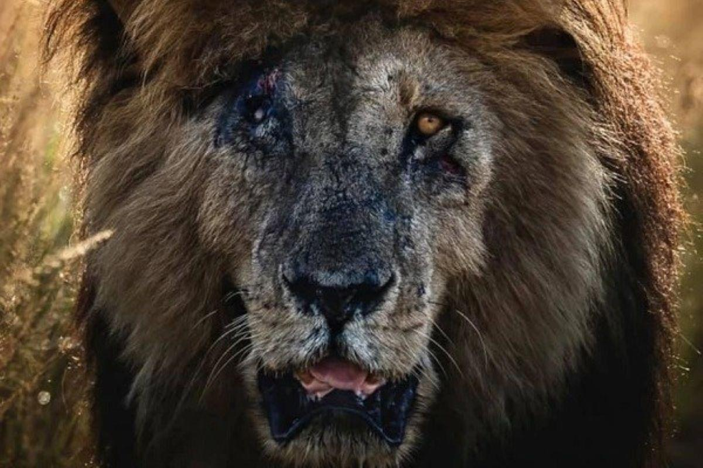
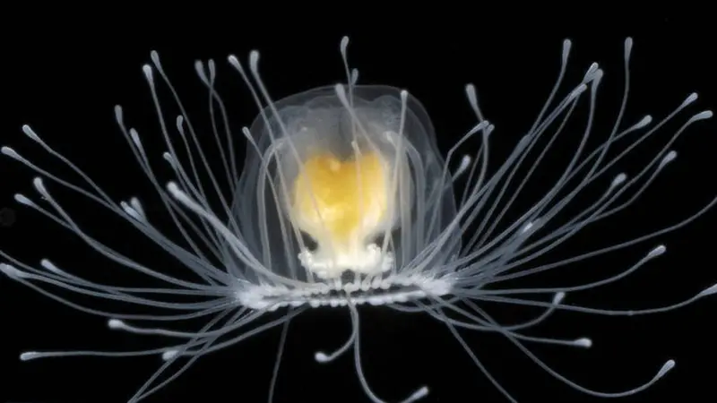
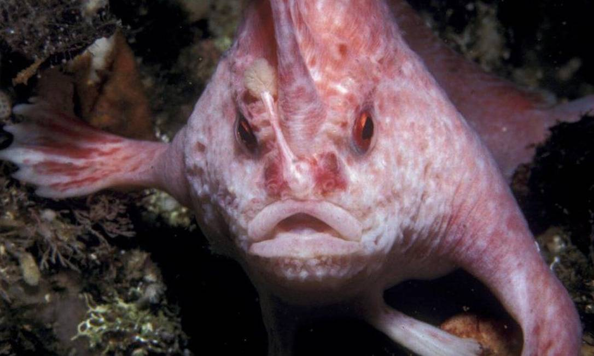

Scarface: O Rei da Savana que Desafiou o Tempo
A savana africana perdeu um de seus ícones mais lendários. Scarface, o leão que conquistou o mundo com sua imponência e cicatriz
marcante, morreu aos 14 anos na Reserva Nacional de Maasai Mara, no Quênia. Sua história não foi apenas a de um predador
dominante, mas a de um verdadeiro guerreiro que desafiou as adversidades e deixou um legado imortal.
Leia mais

Turritopsis nutricula: A Pequena Água-Viva que Desafia a Morte
Desde os primórdios da humanidade, a busca pela imortalidade tem sido um sonho inalcançável.
Lendas e mitologias criaram heróis eternos, deuses imortais e fontes da juventude, mas na realidade,
apenas um ser conseguiu essa façanha: uma pequena água-viva de apenas dois centímetros de diâmetro. Seu nome é Turritopsis
nutricula, e sua capacidade de desafiar o tempo intriga cientistas do mundo todo.
Leia mais

Após 22 Anos, O Peixe-Mão-de-Rosa é Finalmente Avistado na Austrália
Por mais de duas décadas, cientistas acreditaram que o misterioso peixe-mão-de-rosa poderia estar perdido para sempre.
Sua última aparição registrada havia sido em 1999, e com seu status de espécie extremamente ameaçada de extinção, as esperanças
de encontrá-lo novamente diminuíam a cada ano. Mas então, em um momento de puro acaso e descoberta, a natureza provou que ainda
guarda surpresas inesperadas.
Leia mais

Border Collie: O Gênio do Mundo Canino
O Border Collie é amplamente reconhecido como um dos cães mais inteligentes do planeta. Mas o que torna essa raça tão
especial? Seria apenas a rapidez em aprender comandos ou há algo mais complexo envolvido? Para entender sua genialidade,
é preciso conhecer sua história e características únicas.
Leia mais

Nur: A Primeira Ursa Polar Nascida na América Latina
A ursa Nur nasceu no Aquário de São Paulo em 17 de novembro de 2024, sendo a primeira da espécie na América Latina. Filha de
Aurora e Peregrino, veio ao mundo com 400 gramas e agora, aos três meses, explora seu recinto ao lado da mãe, encantando
visitantes. Seu nascimento é um marco para a conservação da espécie.
Leia mais